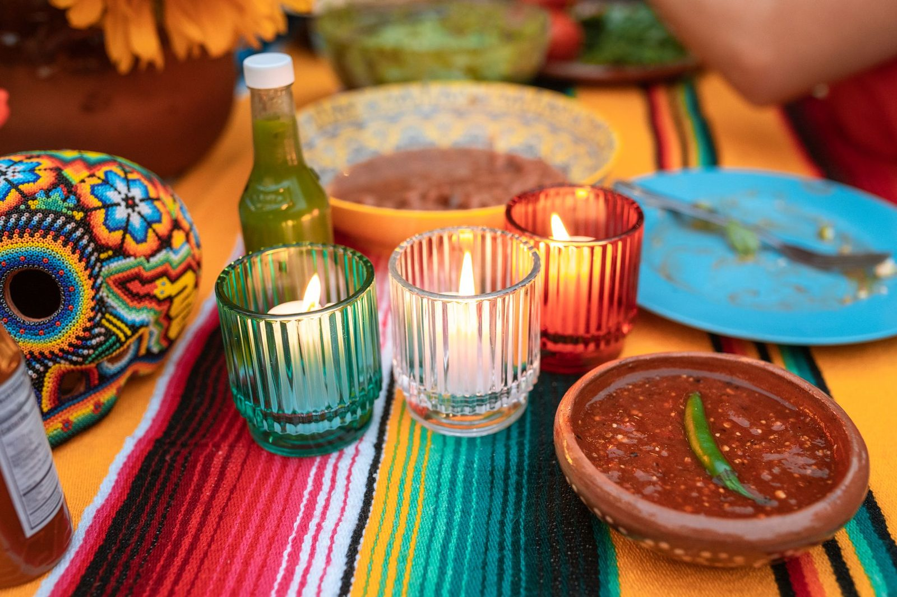

What we cook, and what it costs.
Tacos at $3.50, burritos at $9, family platters from $28 — the whole board, priced plainly.

San Antonio, TX · since 2018
A San Antonio taco shop for people who want the real thing — not Tex-Mex from a chain. Al pastor, burritos, and a green salsa worth driving for.
Tue–Sun 11am–9pm · closed Mondays

The salsa people ask to buy by the jar.
Made fresh, San Antonio, TX